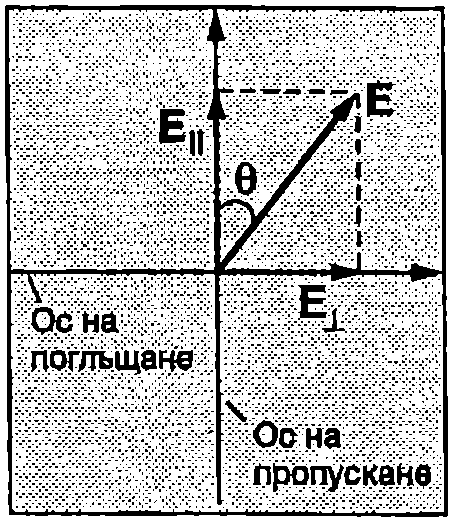
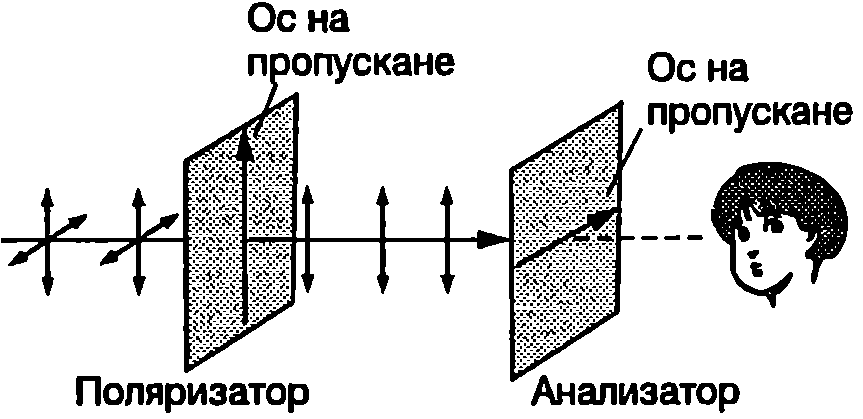
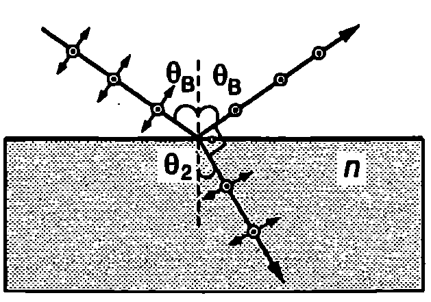
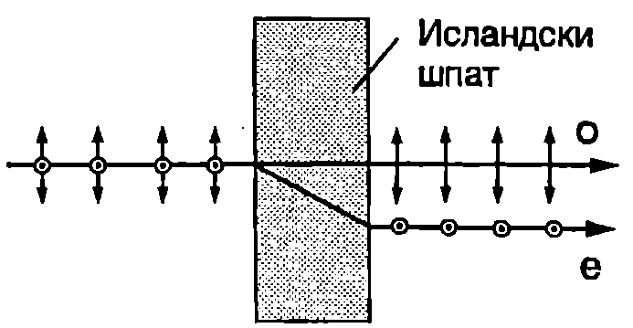
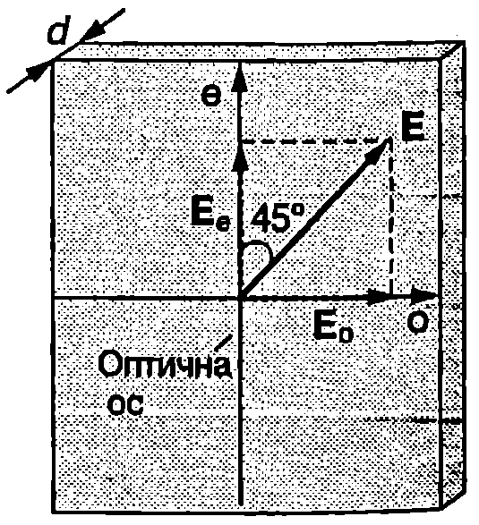
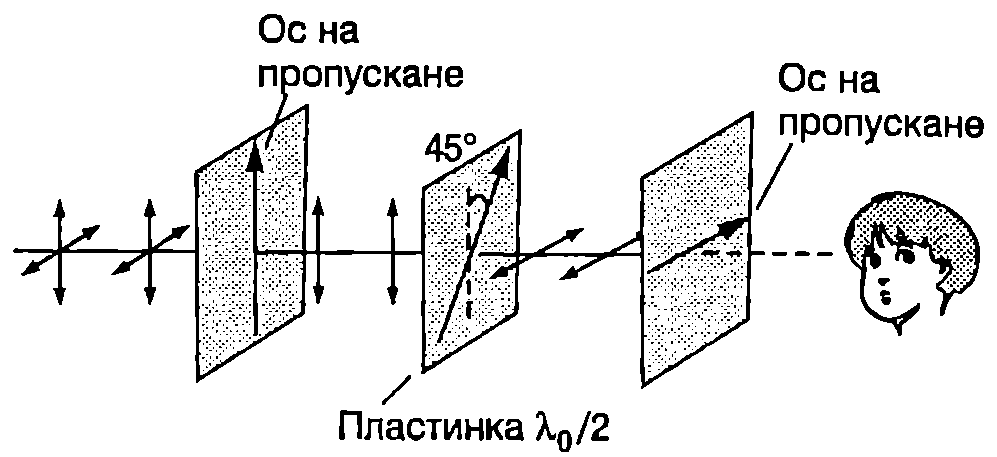
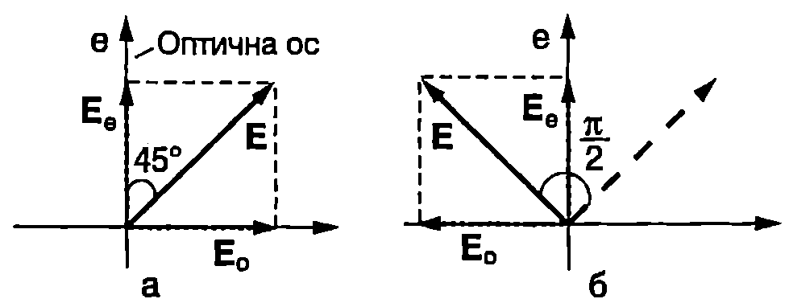
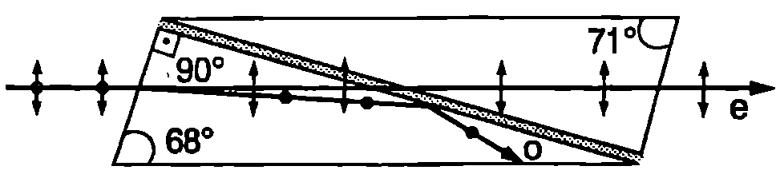
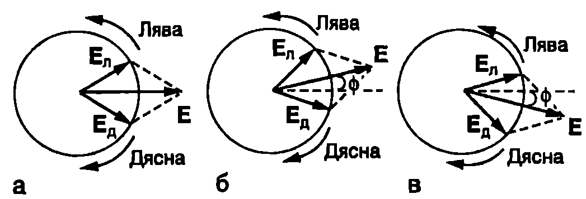

Светлинните вълни, както всички електромагнитни вълни, са напречни. В~\ref{sec:75} беше отбелязано, че плоска монохроматична вълна, която се разпространява по оста $x$, може да се представи като суперпозиция от две вълни, чиито електрични полета извършват трептения в направление на осите $y$ и $z$. Съотношението на амплитудите и фазите на тези две компоненти определя състоянието на поляризация на вълната. Когато направлението, в което трепти електричният вектор $\vec E$ на вълната, не се променя с течение на времето, вълната е линейно поляризирана в това направление. Слънчевата светлина не е поляризирана. Амплитудите и фазите на двете компоненти $E_y$ и $E_z$ на неполяризираната вълна се изменят хаотично с течение на времето, поради което векторът $\vec E$ на резултантното електрично поле също така хаотично променя направлението си, оставайки винаги перпендикулярен на посоката на разпространение на вълната. Явлението, при което в резултат на взаимодействието с веществото неполяризираната светлина се превръща в линейно поляризирана, се нарича поляризация на светлината. При взаимодействието става разделяне на двете компоненти - например чрез поглъщане, отражение или разсейване само на едната от тях. В общия случай взаимодействието с веществото води до изменение на състоянието на поляризация на светлината.
Поляроиди. Закон на Малюс
В някои вещества, например в турмалин, се наблюдава явлението дихроизъм — силна зависимост на поглъщането на светлината от направлението, в което трепти електричният вектор. Дихроичните вещества се използват в най-простите устройства за поляризация на светлината, наречени поляроиди. Поляроидите са листове от прозрачен материал, в който са вградени микроскопични, ориентирани по определен начин кристалчета от силно дихроично вещество (обикновено херапатит или родствени на него съединения). Поляроидът се характеризира с две взаимноперпендикулярни оси: ос на пропускане и ос на поглъщане. Линейно поляризирана в направление на оста на пропускане светлина преминава през идеалния поляроид без да се поглъща. Обратно, ако светлината е линейно поляризирана в направление на оста на поглъщане, тя изцяло се поглъща от поляроида. Неполяризираната светлина може да се разложи на две компоненти, линейно поляризирани в направление на двете оси на поляроида. През поляроида преминава само компонентата, за която електричният вектор трепти в направлението на оста на пропускане. Следователно след преминаване през поляроид от неполяризираната светлина се получава линейно поляризирана светлина, чието направление на поляризация съвпада с оста на пропускане на поляроида. Тъй като двете компоненти на неполяризираната светлина имат еднакъв интензитет, преминалата през поляроида светлина е с два пъти по-малък интензитет от падащата светлина. Затова бяла хартия, разглеждана през поляроид, изглежда сива.
Нека върху идеален поляроид пада линейно поляризирана светлина, чието направление на поляризация сключва ъгъл 0 с оста на пропускане на поляроида (Фиг. \ref{fig:94.1}). Разлагаме електричния вектор $\vec E$ на падащата вълна на две компоненти $\vec E_{||}$ и $\vec E_\perp$, насочени в направление на осите на пропускане и на поглъщане. Компонентата $\vec E_\perp$ се поглъща от поляроида, докато компонентата $\vec E_{||}$ с амплитуда $E_{||} = E_0 \cos\theta$, къде минава без да се поглъща. Интензитетът $I$ ($I\propto E^2$) на преминалата светлина е

`Фиг. 94.1`
$$I = I_0 \cos^2\theta $$ където $I_0\propto E_0^2$ интензитетът на падащата светлина. Уравнение \eqref{eq:94.1} изразява закона на Малюс за интензитета на преминалата през поляроид поляризирана светлина.
От два поляроида може да се конструира най-прост поляриметър уред за изследване на състоянието на поляризация. Ако върху първия поляроид, наречен поляризатор, пада неполяризирана светлина, след преминаването през него светлината става линейно поляризирана (Фиг. \ref{fig:94.2}). Вторият поляроид се нарича анализатор. Когато осите на пропускане на поляризатора и анализатора сключват прав ъгъл (кръстосани поляроиди), поляризираната светлина не преминава през анализатора. Ако между двата кръстосани поляроида се постави вещество, което изменя състоянието на поляризация на преминалата през него светлина, например превръща линейно поляризираната светлина в елиптично поляризирана или само завърта равнината на поляризация, тогава през анализатора преминава светлина, чийто интензитет зависи от свойствата на веществото.

Поляриметър.
`Фиг. 94.2`
Пример 94.1
Слънчева светлина с интензитет $I_0$ преминава през система от два успоредни поляроида. Как се изменя интензитетът $I_2$ на преминалата светлина в зависимост от взаимното положение на осите на пропускане на поляроидите? Определете $I_2$, ако двете оси сключват ъгъл 45°. \end{psexample}
Решение
През първия поляроид винаги преминава 50% от интензитета на слънчевата (неполяризирана) светлина: $I_1 = I_0/2$ Преминалата светлина е линейно поляризирана в направление на оста на пропускане на първия поляроид. Съгласно със закона на Малюс интензитетът $I_2$ на преминалата през втория поляроид светлина ще се изменя от $I_2 = 0$ при $\theta = 90^\circ$ (кръстосани поляроиди) до $I_2 = I_1 = I_0/2$ при $\theta = 0$ (поляроиди с успоредни пропускане).
3a $\displaystyle \theta = 45^\circ: I_2 = \frac{1}{2} I_0 \cos^2 (45^\circ) = \frac{I_0}{4}$.
Ще отбележим, че поради отражението от двете повърхности на поляроидите, интензитетът на преминалата светлина в действителност е по-малък от пресметнатия.
Поляризация при отражение. Закон на Брюстер
Върху плоска стъклена пластинка с показател на пречупване $n$ пада успореден сноп неполяризирана светлина. На границата стъкло-въздух се наблюдават явленията пречупване и отражение (Фиг. \ref{fig:94.3}). Падащата неполяризирана вълна може да се представи като суперпозиция от две независими линейно поляризирани във взаимно перпендикулярни направления вълни. Едното направление на поляризация е успоредно на повърхността на стъклото (перпендикулярно на равнината на чертежа от Фиг. \ref{fig:94.3}), а другото направление лежи в равнината на чертежа. По същия начин се представя пречупената вълна. Електричните диполи на стъклото се намират в електромагнитното поле на пречупената вълна и извършват независими принудени трептения в две взаимно перпендикулярни направления, съвпадащи с избраните направления на поляризация на пречупената вълна. Всеки трептящ дипол излъчва вторични вълни, които интерферират помежду си и формират фронта на отразената вълна. Излъчването на електричен дипол се характеризира с диаграма на насоченост (вж. Фиг. \ref{fig:86.4} на стр. 186). Диполите не излъчват в направлението, в което трептят. Да подберем такъв ъгъл на падане $\theta_1$, при който отразеният лъч е перпендикулярен на пречупения лъч. Тогава едното от трептенията на диполите (което се извършва в равнината на чертежа от Фиг. \ref{fig:94.3}), съвпада с посоката на разпространение на отразената вълна, поради което не предизвиква излъчване в това направление. Отразената вълна се формира само от вълните на излъчване на диполите, които трептят успоредно на повърхността на стъклото. Затова отразената вълна е линейно поляризирана в това направление.

`Фиг. 94.3`
Ъгълът на падане $\theta_1 = \theta_B$, при който отразената вълна е линейно поляризирана, се нарича ъгъл на Брюстер, в чест на шотландския физик Дейвид Брюстер (1781-1868). При падане под ъгъла на Брюстер отразеният лъч е перпендикулярен на пречупения лъч. От Фиг. \ref{fig:94.3} се вижда, че в този случай ъгълът на падане $\theta_B$ и ъгълът на пречупване $\theta_2$ са свързани със съотношението $\theta_2 = \pi/2 - \theta_B$. Заместваме $\theta_2$ в закона на Снелиус $\displaystyle \frac{\sin\theta_B}{\sin\theta_2} = n$ и получаваме $$\tan\theta_B = n. $$ Това равенство изразява закона на Брюстер:
Тангенсът на ъгъла на падане $\theta_B$ (ъгъл на Брюстер), при който отразената светлина е изцяло линейно поляризирана, е равен на показателя на пречупване $n$ на отразяващата среда.
При други ъгли на падане отразената светлина е само частично поляризирана, т.е. съдържа неполяризирана компонента и линейно поляризирана компонента. Поляризацията при отражение от водна повърхност се използва от някои насекоми, които са чувствителни към поляризирана светлина, за ориентиране.
Двойно лъчепречупване

`Фиг. 94.4`
Явлението двойно лъчепречупване е наблюдавано за пръв път през 1670 година от Бертолини в кристала исландски шпат разновидност на калцита (CaCO$_3$). Ако перпендикулярно към естествената стена на кристала се насочи успореден сноп светлина, от противоположната стена излизат два лъча (Фиг. \ref{fig:94.4}). Единият от тях е продължение на падащия лъч и е наречен обикновен лъч (означава се с o'' от ordinary”). Вторият е отместен встрани, т.е, той се пречупва, независимо че ъгълът на падане е равен на нула. Затова е наречен необикновен лъч (означава се с е'' -от exrtaordinary”). Опитът показва, че обикновеният лъч и необикновеният лъч са линейно поляризирани във взаимно перпендикулярни направления (Фиг. \ref{fig:94.4}).
Двойно лъчепречупване се наблюдава в анизотропни кристали. Те притежават ос на анизотропия: определено кристалографско направление, характерно за дадения кристал, в което някои от физичните характеристики на кристала еластични модули, диелектрична проницаемост и свързания с тях показател на пречупване, имат различни стойности в сравнение със съответните стойности във всички направления, перпендикулярни на оста на анизотропия. Следователно скоростта на разпространение на светлината по оста на анизотропия също е различна от скоростта в направленията, които са перпендикулярни на оста на анизотропия. В оптиката оста на анизотропия се нарича оптична ос.

`Фиг. 94.5`
На Фиг. \ref{fig:94.5} е показана тънка плоскопаралелна пластинка от двойнолъчепречупващ кристал (например кварц), която е изрязана така, че оптичната ос (е) да лежи в равнината на пластинката. Успореден сноп линейно поляризирана монохроматична светлина с дължина на вълната във вакуум $\lambda_0$ е насочен перпендикулярно на пластинката. Ще разгледаме частния случай, когато направлението на поляризация сключва ъгъл 45° с оптичната ос на пластинката. Падащата вълна може да се представи като суперпозиция от две линейно поляризирани вълни с равни амплитуди. Електричният вектор на едната вълна трепти в направление на оптичната ос, а на другата в перпендикулярното направление. Да означим с $n_e$ показателя на пречупване за вълната, чийто електричен вектор е успореден на оптичната ос, а с $n_o$ - за вълната с електричен вектор, перпендикулярен на оптичната ос. Вътре в пластинката двете вълни изминават еднакво разстояние, равно на нейната дебелина $d$. Оптичните им пътища обаче са различни, защото се различават показателите на пречупване за двете вълни. Разликата в оптичните пътища е $(n_o - n_e) d$. Следователно след преминаване през пластинката възниква фазова разлика $\delta$ между двете вълни: $$\delta = \frac{2\pi}{\lambda_0} (n_o - n_e) d. $$ Ще разгледаме два важни частни случая:
- $\delta = \pi/2$ Тогава уравнение \eqref{eq:94.3} придобива вида $$(n_o - n_e) d = \frac{\lambda_0}{4}. $$ Пластинка, за която е изпълнено горното условие, се нарича четвъртвълнова пластинка или пластинка $\lambda_0/4$ (ламбда върху четири). На изхода на пластинка $\lambda_0/4$ между двете поляризирани във взаимно перпендикулярни направления вълни възниква фазова разлика $\pi/2$ При тяхната суперпозиция (вж.~\ref{sec:84}) се получава кръгово поляризирана вълна. Обратно, ако падащата светлина е кръгово поляризирана, след преминаване през пластинка $\lambda_0/4$ тя става линейно поляризирана.
- $\delta = \pi$ Тогава уравнение \eqref{eq:94.3} има вида $$(n_o - n_e) d = \frac{\lambda_0}{2}. $$ Пластинка, за която е изпълнено условие \eqref{eq:94.5}, се нарича полувълнова пластинка или пластинка $\lambda_0/2$ (ламбда върху две). С пластинка $\lambda_0/2$ променя направлението на поляризация на линейно поляризирана светлина (вж. пример 94.2).
Пример 94.2
Между два кръстосани поляроида се поставя пластинка $\lambda_0/2$ чиято оптична ос сключва ъгъл $45^\circ$ с осите на пропускане на поляроидите (Фиг. \ref{fig:94.6}). Определете интензитета на преминалата през системата светлина преди и след поставянето на пластинката. Падащата светлина с интензитет $I_0$ е неполяризирана. \end{psexample}

`Фиг. 94.6`
Решение
Тъй като поляроидите са кръстосани, преди да се постави пластинката през втория поляроид (анализатор) не преминава светлина. Падащата върху пластинката $\lambda_0/2$ светлина е линейно поляризирана от поляризатора. Нейният интензитет е $I_0/2$. Съгласно с условието на задачата направлението на поляризация сключва ъгъл $45^\circ$ с оптичната ос на пластинката. На Фиг. \ref{fig:94.7} схематично са представени електричните вектори на двете вълни, на които може да се разложи падащата вълка: преди да навлезе в пластинката (а) и при излизането от нея (б). По условие пластинката внася фазова разлика $\delta = \pi$ между двете вълни. Затова на Фиг. \ref{fig:94.7}б единият от електричните вектори ($\vec E_o$) има противоположна посока, т.е. ако при преминаване през пластинката фазата на $\vec E_e$ се изменя с $2m\pi$ ($m$ - цяло число), фазата на $\vec E_o$ се изменя с $2m\pi + \pi $. Тъй като при ъгъл $45^\circ$ двете вълни имат еднакви амплитуди ($E_o = E_e$), на изхода резултантният електричен вектор $\vec E = \vec E_o + \vec E_e$ е завъртян на ъгъл $\pi/2$ спрямо направлението му на входа.

`Фиг. 94.7`
Следователно пластинката $\lambda_0/2$ завърта направлението на поляризация на $90^\circ$ то става успоредно на оста на пропускане на анализатора: светлината преминава през анализатора без да се поглъща.
Поляризационни призми
Явлението двойно лъчепречупване намира практическо приложение в поляризационните призми, които се използват за получаване и изследване на поляризирана светлина. Първата такава призма е изработена през 1828 година от шотландския физик Никол и по-късно призмите от този вид са наречени в негова чест николи. Николът е съставен от две шлифовани под точно определени ъгли призми от исландски шпат, които са залепени една към друга с тънък слой канадски балсам (Фиг. \ref{fig:94.8}). Канадският балсам е прозрачен материал с показател на пречупване $n = 1,!550$, който е междинен спрямо показателя на пречупване на необикновения лъч $n_e = 1,!486$ и обикновения лъч $n_o = 1,!658$ за исландския шпат. Ъглите в призмата на Никол са пресметнати така, че обикновеният лъч претърпява пълно вътрешно отражение от канадския балсам и се поглъща от страничната стена на призмата, върху която е нанесено поглъщащо покритие. През призмата преминава само необикновеният лъч (Фиг. \ref{fig:94.8}), който, както вече отбелязахме, е линейно поляризиран.

Поляризационна призма (никол).
`Фиг. 94.8`
Оптична активност
Изменението на направлението на поляризация на линейно поляризирана светлина в резултат на преминаването й през захарни разтвори и някои други вещества, се нарича оптична активност. Веществата, които въртят направлението на поляризация, се наричат оптично активни вещества. Оптичната активност се дължи на асиметрията на молекулите на тези вещества, които имат винтова (спирална) структура. Както отбелязахме в~\ref{sec:84}, всяка линейно поляризирана вълна може да се представи като суперпозиция от две кръгово поляризирани вълни с еднакви амплитуди: едната с лява, другата с дясна кръгова поляризация. Веществата със спирални молекули имат различни показатели на пречупване за вълните с лява и с дясна кръгова поляризация. Вълната, за която показателят на пречупване на веществото е по-малък, се движи с по-голяма фазова скорост и след преминаване през оптически активното вещество изпреварва по фаза другата вълна. На векторната диаграма от Фиг. \ref{fig:94.9} са представени електричните вектори на двете кръгово поляризирани вълни и на резултантната линейно поляризирана вълна: а) преди преминаване през оптически активното вещество; б) и в) след преминаване през веществото. Когато вълната с лява кръгова поляризация се движи с по-голяма фазова скорост, на векторната диаграма електричният вектор $\vec E$ на резултантното поле се завърта наляво (Фиг. \ref{fig:94.9}б). Вещества, които завъртат направлението на поляризация наляво (гледано срещу посоката на разпространение на вълната) се наричат лявовъртящи. Обратно, веществата, в които вълната с дясна кръгова поляризация се разпространява с по-голяма фазова скорост, са дясновъртящи (Фиг. \ref{fig:94.9}в). Повечето аминокиселини и белтъци са лявовъртящи вещества, докато обикновената захар и декстрозата са дясновъртящи. Ъгълът на завъртане $\phi$ на направлението на поляризация е правопропорционален на концентрацията $c$ на оптически активното вещество. За разредени разтвори той е равен на $$\phi = \alpha Lc. $$ където $L$ е дължината на кюветата, в която е поставен разтворът. Константата с характеризира свойствата на веществото и се нарича специфичен ъгъл на въртене. Ъгълът $\phi$ може да се измери с поляриметър и по него да се определи концентрацията $c$ на разтвора.

`Фиг. 94.9`